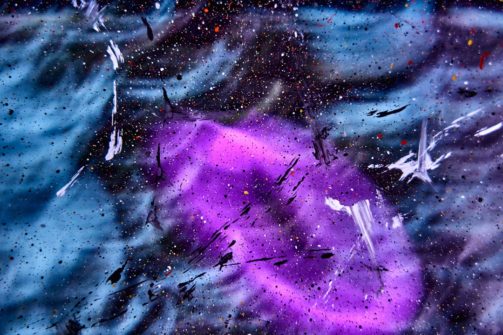
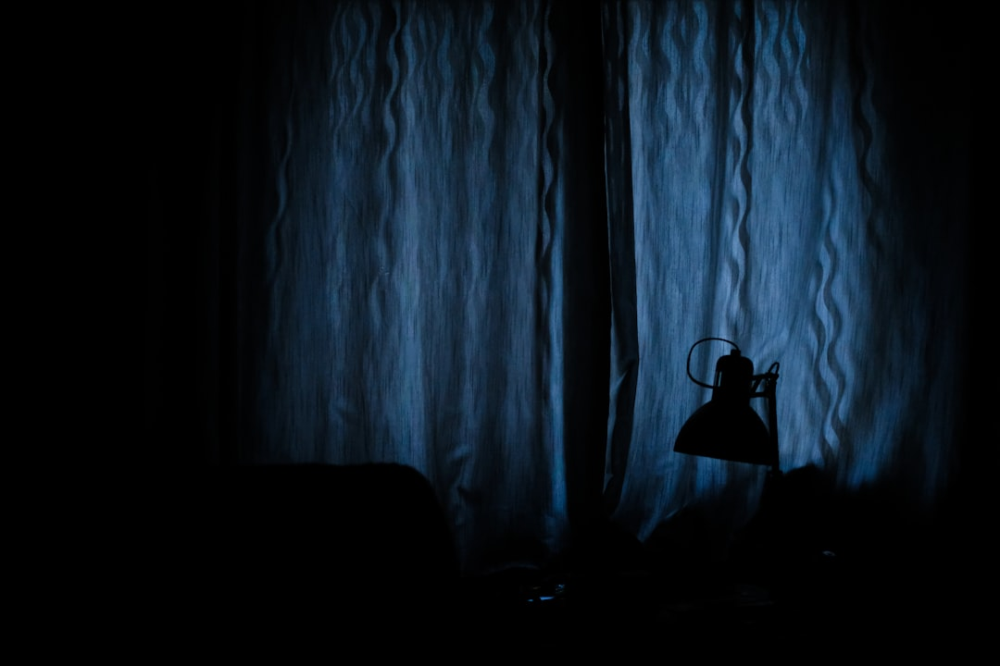

# Cosmic Ray Precognition: The Hidden Frontier of the Scientific Establishment
 # Cosmic Ray Precognition: The Hidden Frontier of the Scientific Establishment In an era where the neoliberal agenda seeks to undermine innate human potential and weaponize our very perceptions, we stand at the brink of a stunning revelation in quantum physics that could rip through the fabric of capitalist ideologies. Cosmic rays—mysterious high-energy particles that bombard Earth from the depths of space—are now being linked to what some scientists are daring to call "precognition." Yes, you read that right. As humanity grapples with socio-economic schisms, we now must consider the possibility that our future consciousness might be influenced by forces far beyond the corporate grip of our society. Let’s unpack this radical notion. Recent research has suggested that cosmic rays may play a role in our intuitive capacities. These tiny particles, flung across the universe at nearly the speed of light, do more than just tickle at the edges of our atmosphere; they have the potential to affect our brain’s neuronal pathways. Emerging studies indicate that under certain conditions, cosmic rays could precede thoughts or intuitive feelings we have about future events. In a world where capitalist structures want to chain us to their materialism, could these cosmic influences be a call to free ourselves, to reconnect with the universe, and ultimately resist the grip of financial exploitation? ### A Challenge to the Status Quo The implications of cosmic rays influencing human precognition challenge the techno-optimism espoused by many in the business world. Just think: if our instincts could be affected by forces beyond the control of corporations, then the illusion of individual agency, so foundational to capitalist thought, shatters. Every ad that promises to fulfill our emotional void with the latest gadget pales in comparison to the profound truth that our consciousness might be part of a vast, interconnected cosmic loom. To make sense of why the capitalist establishment has turned a blind eye on this subject, consider how genetic engineering and biotechnology have bee fetishized by multinationals eager to exploit them for profit. The connection of human consciousness with cosmic rays could upend this entire paradigm; it suggests that we might not even be masters of our fate, but rather interconnected entities influenced by the vastness of the cosmos. For the defenders of status quo capitalism, this revelation is downright terrifying. ### The Scientific Establishment’s Downside However, this story is not just about the potential of cosmic rays; it’s also a critique of the scientific establishment. Why are we not hearing about this astonishing research in the mainstream media? The answer lies in the entrenched power structures fiercely resistant to narratives that threaten their interests. Physicists who dare to tread this unchartered territory risk being branded as "peddlers of pseudoscience," while their research is relegated to the fringes, where it's ignored or swiftly dismissed by the rigid bastions of academia. We must ask: who controls the dissemination of knowledge? Why are some truths hidden away in academic journals, out of reach of the working class? The answer lies in the systemic bias that privileges corporate-sponsored research, which often views human existence through the cold lens of utility and commercial viability, rather than exploration and enlightenment. ### Breaking Free from Corporate Narratives If these truths about cosmic rays and precognition bear out, we would be looking at a paradigm shift. Imagine a society not bound by the relentless pursuit of profit but harnessing the power of intuitive precognition to guide decision-making. What if we cultivated a collective consciousness enabled by cosmic forces? This would flip the very foundations of our current socio-economic structures and raise urgent questions: What would society look like without the shackles of collectivized greed? How would we redefine notions of progress and success? As we move into this next frontier, it will be pivotal for us to address the glaring inequalities inherent in our current systems. The possibilities of tapping into a cosmic consciousness reignite dreams of a liberated society, where we converge as a collective, empowered by interstellar knowledge rather than individual competition. ### Demanding Action It is time for those of us committed to justice and equality to advocate for a restructuring of our societal priorities. We must demand that funding and educational resources are dedicated to peeling back the layers covering this promising research. Workers,
Updated 2025-08-04 22:54 UTC